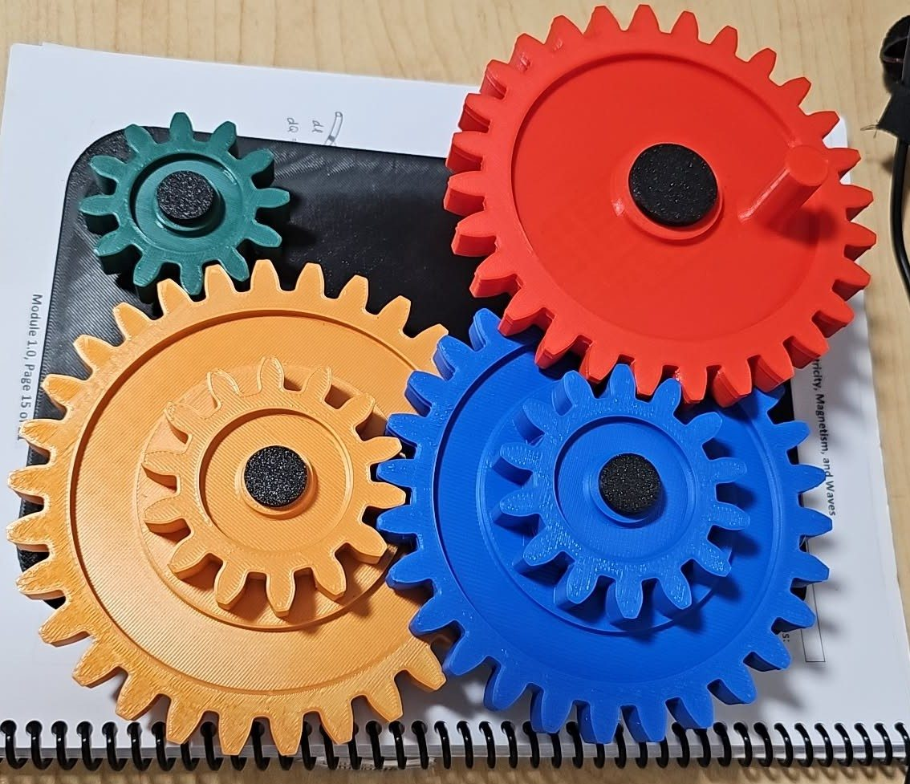

Involute Gear Train
Parametric gear generation + FDM fabrication
Why I built this
I wanted to understand two things at the same time: how involute gear geometry is actually derived mathematically, and how accurately I could translate a parametric CAD model into a physical, meshing gear train using the university's 3D printers. Gear ratios come up constantly in mechanical and aerospace systems — actuators, propulsion, drivetrains — so working through them hands-on made sense before I encountered them in a more formal context.
Deriving the tooth profile in SolidWorks
Rather than pulling a gear from a library, I modelled each gear from the involute equation directly in SolidWorks. The involute curve is parameterised by the base circle radius and the roll angle — I entered these as driven equations in the sketch so that changing the tooth count or pressure angle automatically regenerated the entire profile.
- Pressure angle set to 20° (standard for spur gears) — this controls tooth thickness and contact ratio.
- Module kept consistent across all four gears so they could mesh correctly regardless of tooth count.
- Addendum and dedendum circles derived from the pitch diameter, with clearance built into the equation so printed teeth wouldn't bind.
- Used SolidWorks Gear Generator as a cross-check to validate that pitch diameters and centre distances were correct before committing to a print.
Gear ratios in the train
The train uses four gears with different tooth counts to produce different output speeds from a single input. A 12-tooth pinion drives a 30-tooth gear (ratio 1:2.5), which is axle-connected to a 14-tooth pinion driving a 28-tooth gear (ratio 1:2) — giving an overall compound ratio of 1:5 from the smallest to the largest gear. A secondary pair runs at 1:5 as a direct stage for comparison.
3D printing at the UBCO Makerspace
All four gears were printed on the Prusa i3 MK3S at UBCO's Makerspace in PLA at 0.1mm layer height. Getting the tooth clearance right took iteration — the first print came out with teeth that were too tight and wouldn't rotate freely. I added 0.2mm radial clearance to the dedendum and reprinted, which fixed the binding.
- Each gear printed separately in a different colour to make the ratio stages visually distinct.
- Foam inserts pressed into the centre bores act as friction bearings against the axle pins.
- The failed first print (teeth meshing too tight) is kept as a reference — it clearly shows where the profile overlapped.
What I learned
Working through the involute maths manually before printing gave me a much clearer mental model of why standard pressure angles and module systems exist — they exist precisely so that gears from different designs can mesh without custom clearance calculations every time. The 3D printing side taught me that theoretical clearance and printed clearance aren't the same thing: FDM parts swell slightly on the outer walls, so you need to account for that in the model, not just in the slicer.
Interactive 3D Model
CAD & design


Printing & results



In motion